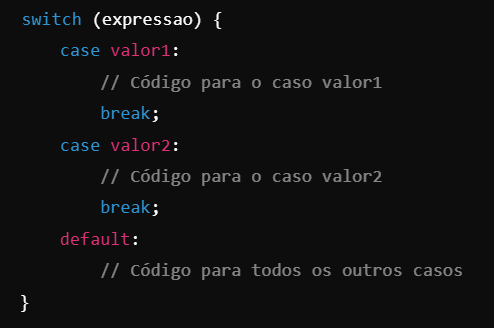
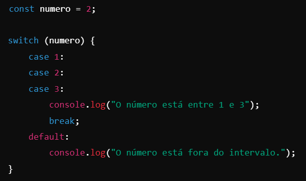

O switch é uma estrutura de controle usada no JavaScript para tomar decisões com base no valor de uma variável ou expressão.
Ele é particularmente útil quando você precisa comparar um único valor com várias opções possíveis.
Estrutura Básica do switch

Como Funciona?
1. expressao: É avaliada uma única vez.
2. case valor: Compara o valor da expressão com o valor especificado.
3. break: Finaliza a execução do bloco do case. Sem ele, os casos seguintes também serão executados (o que é chamado de "fall-through").
4. default: Opcional. Executa um bloco de código se nenhum dos case for atendido.
Dicas para Uso do switch:
1. Evite "Fall-Through":
Sempre inclua break após cada caso, a menos que você queira intencionalmente que os próximos blocos sejam executados.
2. Use para Comparações Simples: O switch é ideal para verificar valores fixos, como números ou strings.
3. Considere o default: Inclua sempre um default para tratar casos não previstos.
Exemplo de "Fall-Through" Intencional

Saída: O número está entre 1 e 3
Aqui, os casos 1, 2 e 3 executam o mesmo bloco de código.
Funcionamento: O valor do input é capturado usando document.getElementById('numero').value.
Convertido para inteiro com parseInt(numero).
Usando switch (true), o código verifica o intervalo do número e define a categoria.
O resultado é exibido no elemento com o ID resultado.